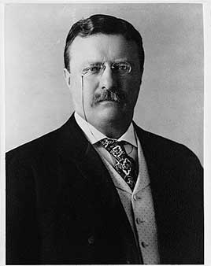

This presidency falls in the realignment era (1896–1932), when the two parties were trading positions and both had progressive and conservative wings.
Became the youngest president, at 42, when William McKinley was assassinated. He broke up big trusts, settled the 1902 coal strike, signed the Pure Food and Drug Act and meat inspection law, protected about 230 million acres of public land, started building the Panama Canal and won the Nobel Peace Prize for ending the Russo-Japanese War.
Shaded areas show the years in office, with a few years before and after for comparison. Budget years ran July to June until 1976 (now October to September), so each year's figures cover parts of two calendar years.
June 30, 1901 (end of fiscal 1901): $2.14 billion → June 30, 1908 (end of fiscal 1908): $2.63 billion
Daily debt figures don't exist before 1993, so Roosevelt's numbers use the fiscal years closest to his terms, the same rule as every other page.
Debt as a share of GDP. Above 100% means the debt is bigger than a year of everything the country produces.
Money borrowed each budget year (below the line) or paid down (above). The White House budget office's yearly figures begin in 1901.
1901: 2.4% → 1908: 8.5%. Yearly averages; monthly figures begin in 1948. Estimates by economist Stanley Lebergott (NBER, 1957).
How much prices rose each year (consumer price index).
What everyday prices and paychecks did while in office.
Prices use the consumer price index (MeasuringWorth). The minimum wage is the federal rate set by Congress.
1,081 orders. Count from the American Presidency Project. Many of his orders withdrew public land for forests, parks and wildlife refuges.
Yearly counts aren't reliable for this era. Orders were not numbered until 1907, when the State Department numbered the ones already in its files, and many orders were never numbered at all, so only the total is shown.
Source: American Presidency Project: executive orders (full list of every order).
Barred federal employees from lobbying Congress for raises or laws except through their department heads.
Federal RegisterMade Florida's Pelican Island the first federal bird reservation, the start of the National Wildlife Refuge System.
Federal RegisterIncomplete: orders before 1929 were not numbered or collected consistently. This archive has 104 of the roughly 1,081 orders counted for this president.
Source: Executive Orders Archive, compiled from the American Presidency Project and the Federal Register. Topics are the archive's automated tags; "Revoked" and similar labels come from the Federal Register's records.
A pardon wipes out the punishment for a federal crime; a commutation shortens a sentence but leaves the conviction. Counts are by federal fiscal year (July to June). The Justice Department counts fiscal 1902, which began two months before he took office, and all of fiscal 1909, including Taft's first four months, under Roosevelt.
Source: U.S. Dept. of Justice, clemency statistics, which lists every recipient with the crime and sentence.
The crime: Fighting U.S. rule in the Philippine–American War
Sentence: Various
Why it drew attention: A general amnesty issued as the war was declared over, excluding those convicted of murder, rape, arson or robbery.
SourceThe same checklist for every president. Tap a row for details and sources.
No articles of impeachment were voted on.
Never charged.
No cabinet member or White House aide was convicted. Several career Post Office officials were convicted of bribery after an investigation Roosevelt ordered in 1903.
SourceHe named special prosecutors for the Post Office bribery cases (1903) and the Oregon land fraud cases (1904–10), which convicted a U.S. senator and two congressmen.
SourceHis Justice Department created the Bureau of Investigation, forerunner of the FBI, in 1908 after Congress barred it from borrowing Secret Service agents. No official investigation found it was used against his opponents.
What happened, what was proven, and how it ended.
After a shooting in Brownsville, Texas, Roosevelt dishonorably discharged all 167 Black soldiers of three companies of the 25th Infantry without a trial, though no evidence tied them to it.
Outcome: The Army reversed the discharges to honorable in 1972; one survivor received a pension.
SourceWhen Colombia rejected a canal treaty, the U.S. backed Panama's revolt, sent warships to block Colombian troops, and recognized the new country within days to sign a canal deal.
Outcome: The U.S. paid Colombia $25 million in 1921.
SourceU.S. troops used torture such as the 'water cure' and, on Samar, an order to kill all males over ten. Hundreds of thousands of Filipino civilians died from fighting, famine and disease.
Outcome: A Senate committee investigated in 1902; General Jacob Smith was court-martialed and forced to retire.
SourceHis campaign took large donations from corporations and insurance companies, which was legal at the time.
Outcome: Roosevelt then pushed Congress to ban corporate contributions, which it did in the Tillman Act of 1907.
SourceWidely quoted remarks, with the context they were said in.
Speak softly and carry a big stick; you will go far.
The men with the muck-rakes are often indispensable to the well-being of society; but only if they know when to stop raking the muck.
I took the Isthmus, started the canal and then left Congress not to debate the canal, but to debate me.